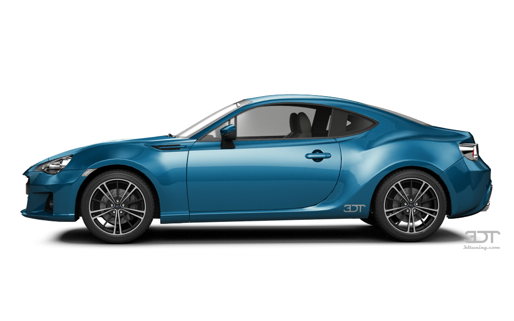
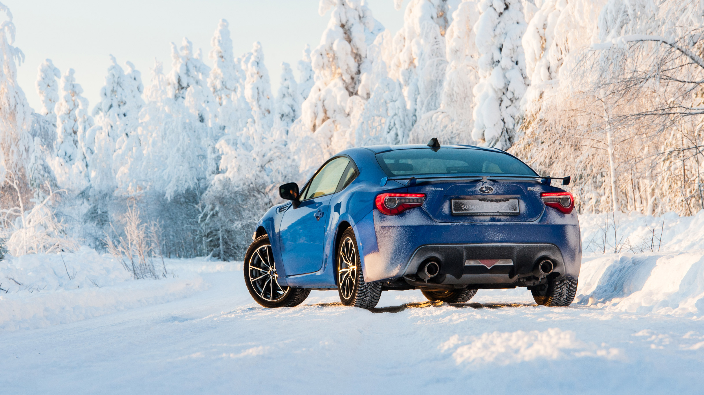
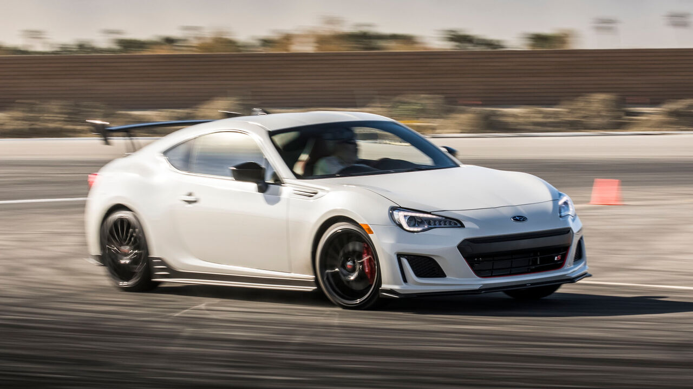

Если оказавшись за рулем вы ожидаете разгона с дымом из под колес и прижимания корпуса к сиденью, Subaru BRZ не разочарует. Настоящим подарком BRZ является то, как он входит в повороты и ощущения, которые при этом испытывает водитель. Если выписывание крутых поворотов, выдавливание из двигателя максимума и самостоятельное переключение передач это то, как вы получаете удовольствие, BRZ вас поддержит.
Испытайте удовольствие от вождения

Если вы хотите получить настоящий водительский опыт и почувствовать мощность по доступной цене, обратите внимание на Subaru BRZ.
Перед нами один из самых дешевых заднеприводных купе на рынке, поэтому купить новый subaru brz не проблема.
Возможно, 200 лошадиными силами сейчас никого не удивишь, но компактному автомобилю их хватает с головой.
Царь горных серпантинов

Оппозитная «четвёрка» оснащена тойотовской системой комбинированного впрыска

Спереди установлены стойки McPherson с L-образными нижними рычагами, а сзади — независимая подвеска на двойных поперечных рычагах
Технические характеристики
Мощность
Разгон до 100 км/ч
Крутящий момент
Тип КПП
Объем двигателя
Расход топлива
Покрышки и диски
200 л. с.
7.6 сек
205 Нм
Механическая
2.0 л
10.4 л/100 км
R17/R17